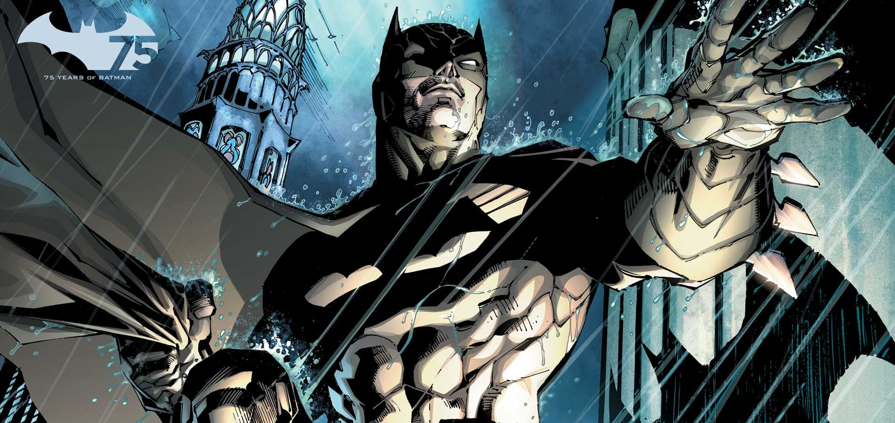

About Batman
Batman is the superhero protector of Gotham City, a man dressed like a bat who fights against evil and strikes terror into the hearts of criminals everywhere. In his secret identity he is Bruce Wayne, billionaire industrialist and notorious playboy. Although he has no superhuman powers, he is one of the world's smartest men and greatest fighters. His physical prowess and techical ingenuity make him an incredibly dangerous opponent. He is also a founding member of the Justice League.
Character Facts
- Real Name: Bruce Wayne
- Current Alias: Batman
- Exceptional Martial Artist
- Combat Strategist
- Inexhaustible Wealth
- Advanced Technologist
- CEO of Wayne Enterprises
History
Bruce Wayne was born to wealthy physician Dr. Thomas Wayne and his wife Martha, who were themselves members of the prestigious Wayne and Kane families of Gotham City, respectively. When he was three, Bruce's mother Martha was expecting a second child to be named Thomas Wayne, Jr. However, because of her intent to found a school for the underprivileged in Gotham, she was targeted by the manipulative Court of Owls, who arranged for her to have a car accident. She and Bruce survived, but the accident forced Martha into premature labor, and the baby was lost. While on vacation to forget about these events, the Wayne Family butler, Jarvis Pennyworth was killed by one of the Court of Owls' Talons. A letter he'd written to his son Alfred, warning him away from the beleaguered Wayne family, was never delivered. As such, Alfred - who had been an actor at the Globe Theatre at the time and a military medic before that, travelled to Gotham City to take up his father's place, serving the Waynes as butler. As he grew older, his family's reputation made Bruce restless, and he began sneaking out of school to visit Gotham City, where he wouldn't be so easily recognized. On one such outing, when he was ten years old, he was picked up by Officer Jim Gordon and his partner on their patrol. En route back to the station, Bruce witnessed Jim accepting a trenchcoat as a bribe from a tailor — though neither realized it was a bribe at the time — but Bruce would remember it as an indicator of Jim's character. After his parents came to retrieve him, the Waynes went to see The Mark of Zorro at the Monarch Theater. When the Waynes were walking home after the movie, a mugger named Joe Chill attempted to rob them at gunpoint, and panicked, shooting both Thomas and Martha dead.Following his parents' deaths, Bruce attempted to commit suicide with a razor blade. However, just before he went through with it, he realized that this wasn't what his parents would want, and it was at that moment Bruce vowed to spend the rest of his life warring on crime.Bruce became obsessed with the search for meaning in the loss of his parents. He thought perhaps the mythical Court of Owls was responsible, but he never found anything to prove it.Shortly after their deaths, Bruce became obsessed with using toy guns and killing the man who murdered his parents. Because of this, Alfred sent Bruce to an Arkham boys' rehabilitation home upstate where he first met Harvey Dent. The boys became good friends but wouldn't realize their identities until years later. In his youth, Bruce attended Gotham Academy. It was there that he dated Julie Madison, but his psychological issues with his parents' deaths ultimately led to the end of their relationship. One day, he was asked by a professor to answer a problem involving a projectile being fired at a target. This triggered Bruce to answer the question by burning the answer on the professor's front yard. Bruce was later expelled from Gotham Academy and began attending Roxbury Fielding Academy.Troubled by grief, Bruce found that he couldn't function the way he was, so he hired a homeless man to pretend to be Alfred to approve of the paperwork so that Bruce could erase his memory with electroshock therapy, but chose not to go through with it, and to use his pain as a motivator. At the age of 18, he used his relationship with Erin McKillen - a daughter of the Irish mob, and with whom he attended Roxbury Academy - to locate Joe Chill, and learned that he had simply needed the money, and there was no deeper meaning to his parents' deaths.